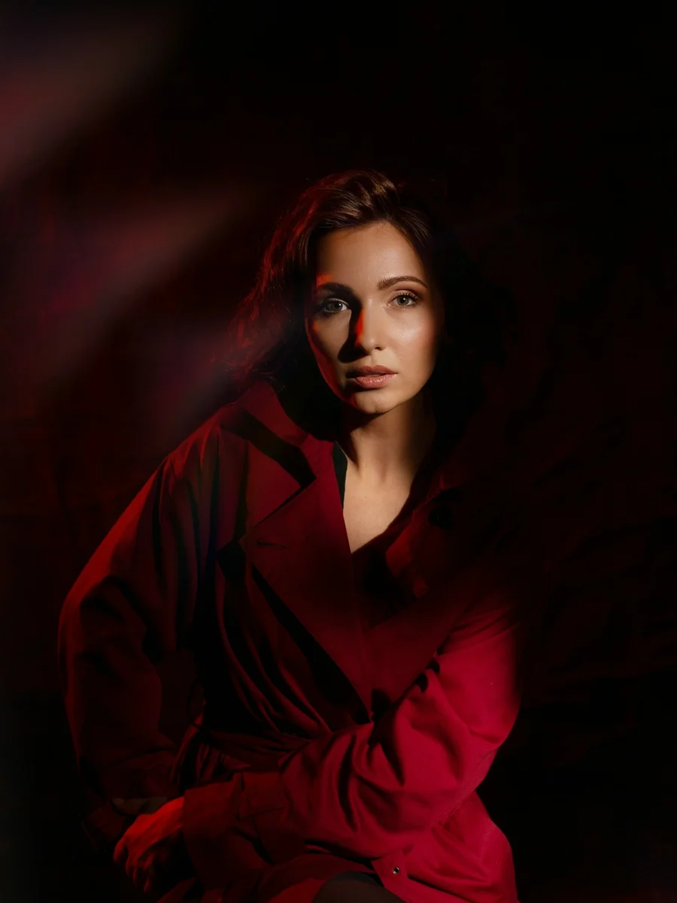
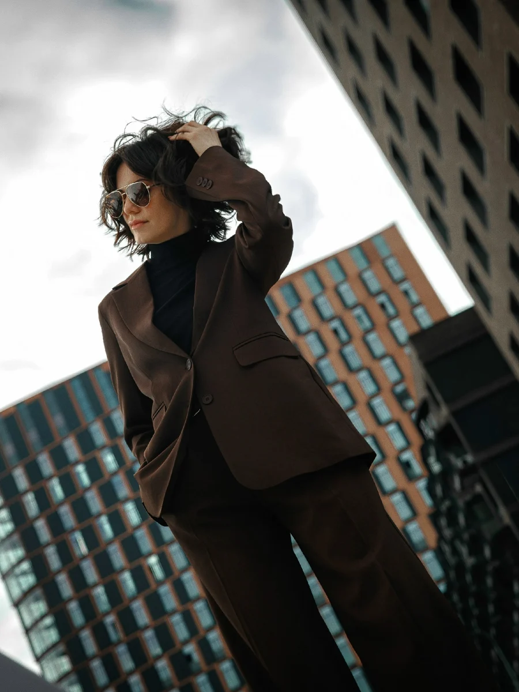
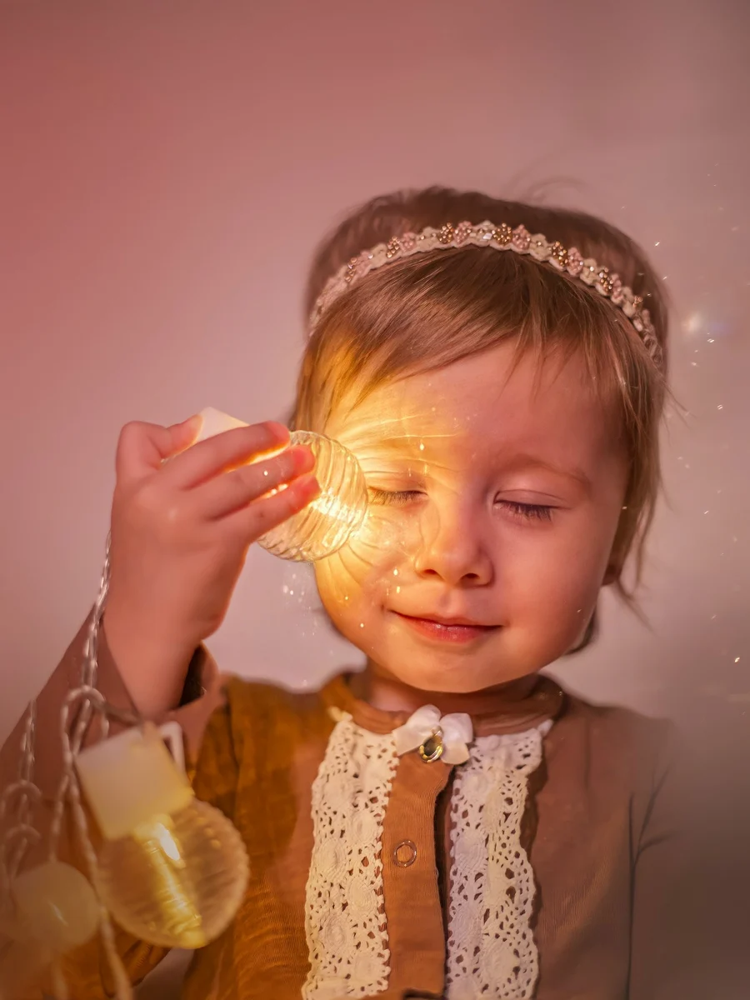
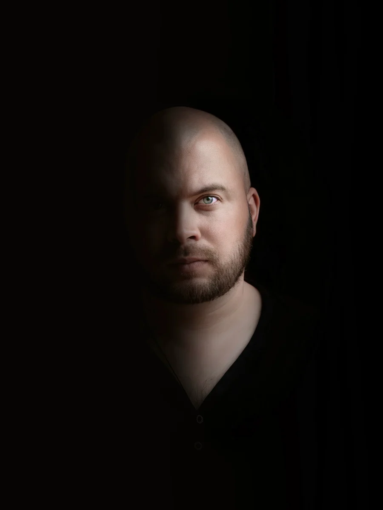
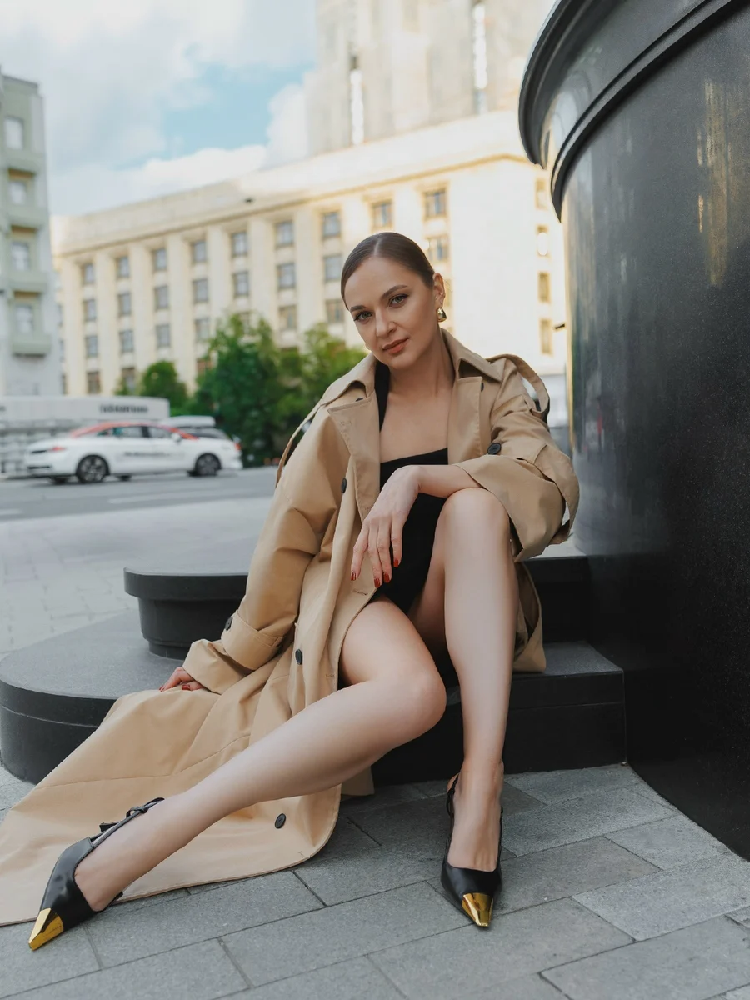
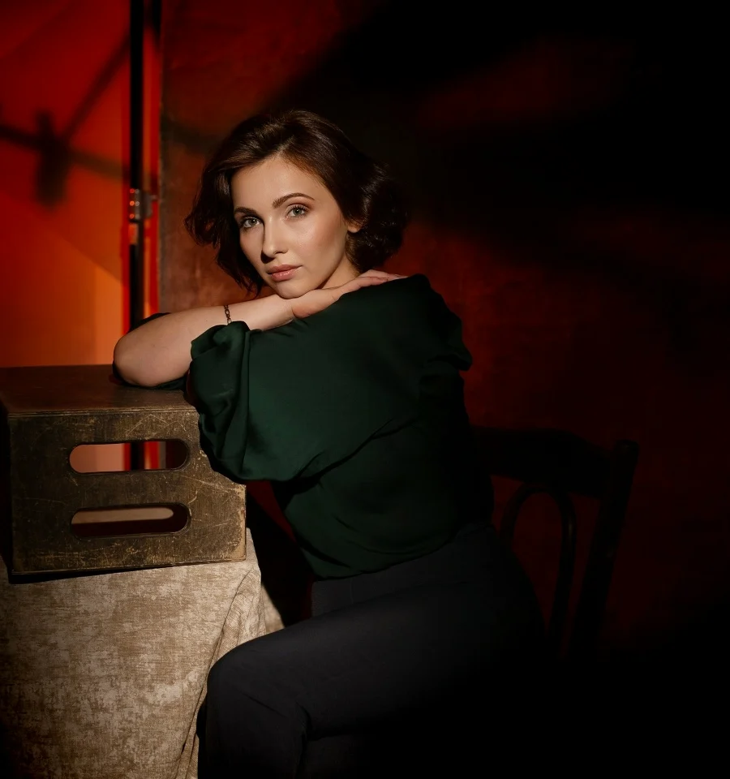
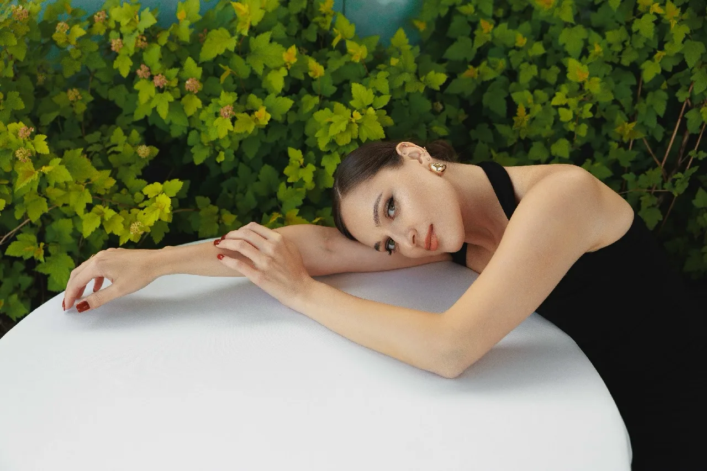
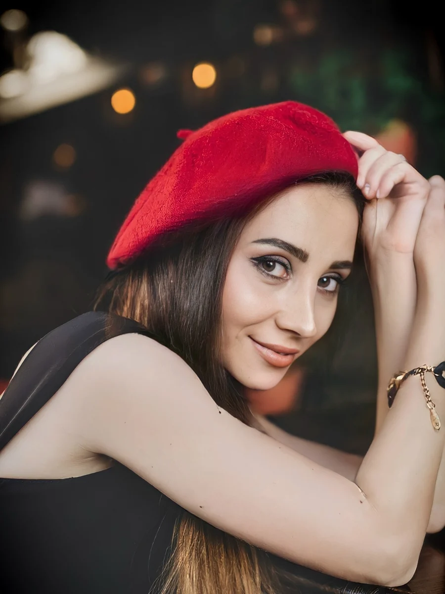

Фотосессии в Москве – живые кадры без застывших поз
Студия или город, в любую погоду. До съёмки подберём образ и цвет одежды – и вы узнаете себя на каждом кадре.


Студийный портрет
Цветной свет, образ под ваш цвет. 1 час.


Уличная съёмка в Сити
Город, смелые ракурсы. 1,5 часа.


Детская съёмка
Тёплый свет, в темпе ребёнка. 1 час.


Мужской портрет
Тёмный фон, характер. 40 минут.


Прогулка по Патриаршим
Тренч, город, без застывших поз. 1,5 часа.
Съёмка-концепция, а не просто красивые фото
Придумываем идею, собираем образ, макияж и свет под неё – и снимаем кадры, которые хочется рассматривать. Для портфолио модели, бренда одежды или для себя.
- Идея и мудбордДо съёмки обсуждаем настроение, цвет и референсы
- КомандаВизажист и стилист по договорённости, подберу под задачу
- Сложный светЦветные фильтры, силуэты, тени – в студии или на локации
Цену называю до съёмки
Расскажите, для чего нужны фото и сколько образов хотите. Назову цену и что в неё входит, до того как вы забронируете дату.
- Время в строке – это сама съёмка, без сборов и дороги
- Срок готовности назову до съёмки, а не после
- Ретушь естественная: кожа остаётся кожей

Индивидуальная фотосессия
1 часуточнитьСтудия или улица, один-два образа. Перед съёмкой подскажу, что надеть под ваш цвет.
Портрет в студии
1 часуточнитьФон и свет под ваш цветотип. Аренду студии подберём вместе.
Семейная съёмка
1,5 часауточнитьДома, в парке или в студии. С детьми снимаем в их темпе, без «улыбнись в камеру».
Love story
1,5 часауточнитьПрогулка по Москве в мягком утреннем или вечернем свете.
Мужской портрет
40 минутуточнитьДля сайта, профиля и резюме. Можно приехать к вам в офис.
Съёмка для блога и экспертов
2 часауточнитьНесколько образов и мест за одну встречу – запас кадров на месяцы вперёд.
Детский сад и школа
по группеуточнитьНеклассическая групповая съёмка: без рядов на скамейке и «смотрим в камеру». Живые портреты каждого ребёнка и общие кадры-истории.
Креативная фэшн-съёмка
по концепцииуточнитьИдея, образ, макияж и сложный свет. Для портфолио, бренда или для себя.

Подбираем образ под ваш цвет
- ЦветотипПодскажу, какие оттенки одежды и фона вам идут, а какие гасят лицо
- Образ из вашего гардеробаПришлите фото вещей – соберём два-три варианта, покупать новое не обязательно
- Место под настроениеСтудия, парк или улицы Москвы – выбираем по свету и цвету, а не по моде
- Естественная ретушьУбираю случайное, а не черты лица: вы узнаете себя на фото
Сначала спрашиваю, для чего вам фото
Аватар для работы, подарок маме или память о том, какими были дети этой осенью, – от этого зависят место, свет и образ.
Снимаю живо и кинематографично, без застывших поз. Не нужно быть моделью: умеете ходить и носить пальто – уже сработаемся.
Если вы стесняетесь камеры – это нормально. Первые десять минут снимаем просто так, чтобы привыкнуть.

Выберем дату съёмки
Напишите во ВКонтакте, какую съёмку хотите и для чего: назову цену, свободные даты и подскажу, что надеть.